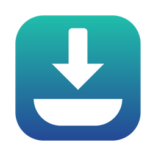
모아모아 플레이어 (JustGrab Player)
링크를 넣어 소리와 영상을 저장하고, 모아서 듣는 무료 프로그램이에요. 광고도 회원가입도 없어요.
- Windows
- Mac
- Linux
무료로 내려받을 수 있어요.
무엇을 하는 프로그램인가요
-
저장
영상 링크를 붙여넣고 소리(MP3) 또는 영상(MP4, 최대 1080p)을 골라 원하는 폴더에 저장해요.
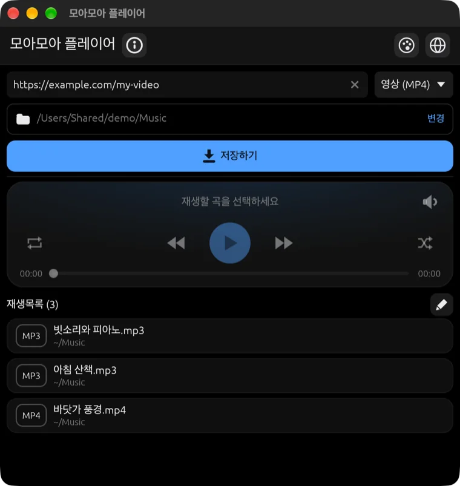
-
소리 재생
저장한 소리는 앱에서 바로 들어요.
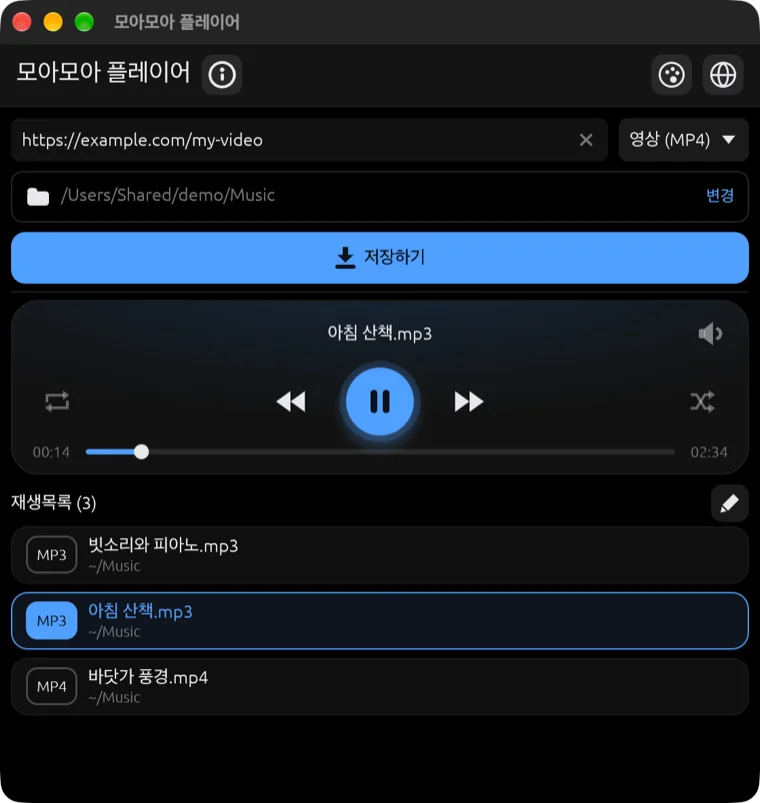
-
영상 재생
영상은 누르면 내 컴퓨터의 기본 동영상 프로그램에서 열려요. 화면은 QuickTime Player의 예예요.
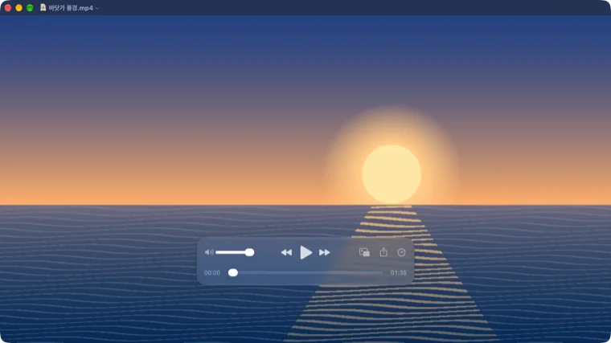
사용 방법: 링크로 MP3·MP4 저장하기
링크를 붙여넣고 저장해서 듣기까지, 실제 앱 화면을 따라가 보세요.
-
1주소 붙여넣기
저장하고 싶은 영상의 링크(URL)를 복사해 맨 위 입력창에 붙여넣어요. [저장하기] 버튼이 켜져요.
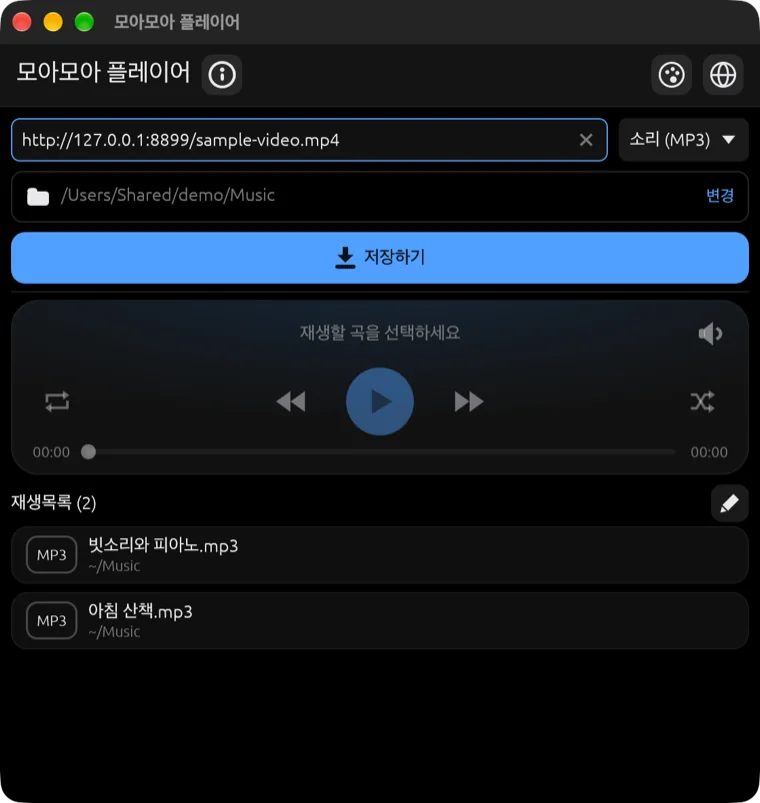
-
2형식 고르기
음악처럼 듣기만 할 거면 소리(MP3), 화면까지 필요하면 영상(MP4)을 골라요. 저장할 폴더는 아래 줄의 [변경]으로 바꿔요.
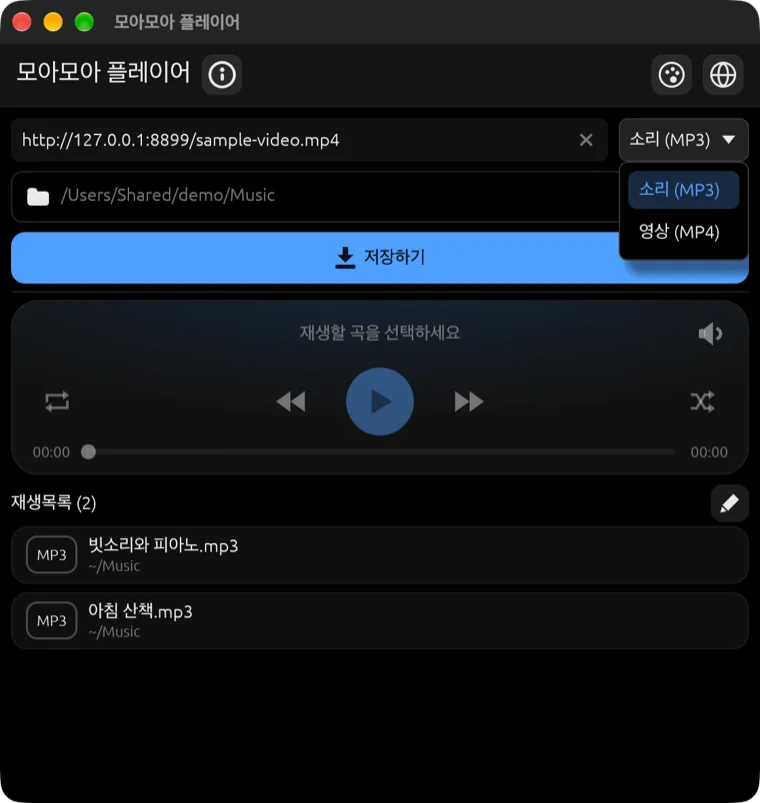
-
3안내 확인하기
[저장하기]를 누르면 저작권 안내가 나와요. 읽고 [동의하고 저장]을 눌러요. "다시 보지 않기"를 선택하면 다음부터는 바로 저장해요.
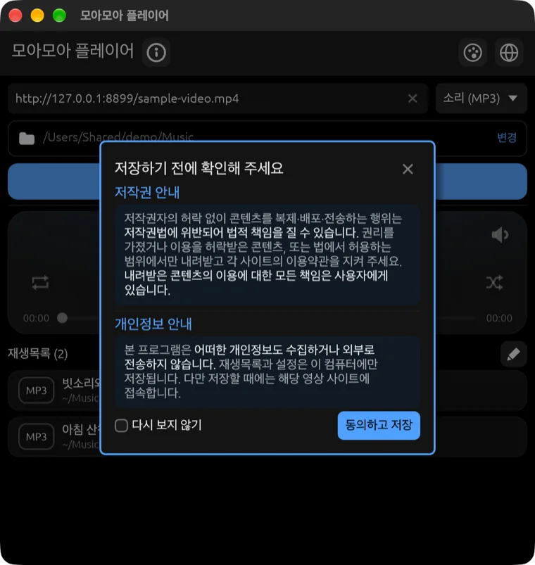
-
4저장되는 것 지켜보기
진행률이 막대로 보여요. 다 받은 뒤에는 MP3로 바꾸는 과정이 이어져요.
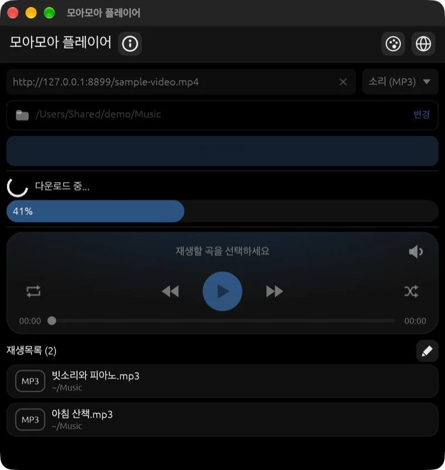
-
5재생목록에서 확인하기
저장이 끝나면 재생목록 맨 아래에 NEW 표시와 함께 새 파일이 생겨요.
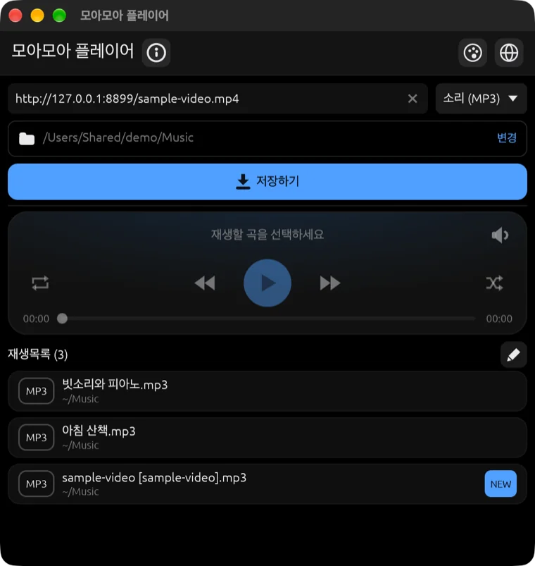
-
6눌러서 듣기
파일을 누르면 바로 재생돼요. 일시정지, 이전·다음 곡, 반복, 섞기를 쓸 수 있어요. 영상 파일은 컴퓨터의 기본 동영상 프로그램에서 열려요.
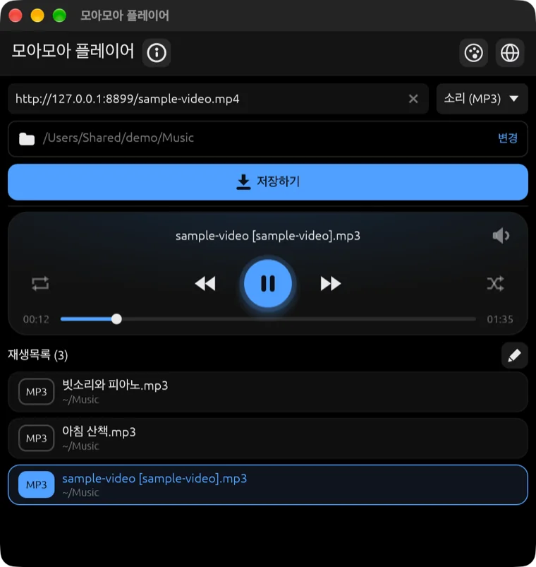
-
7목록 정리하기
연필 버튼을 누르고 파일을 여러 개 선택해 한꺼번에 목록에서 빼거나 휴지통으로 옮길 수 있어요. 선택한 파일은 함께 끌어서 순서도 바꿔요. [전체 선택]을 누르면 모두 골라져요.
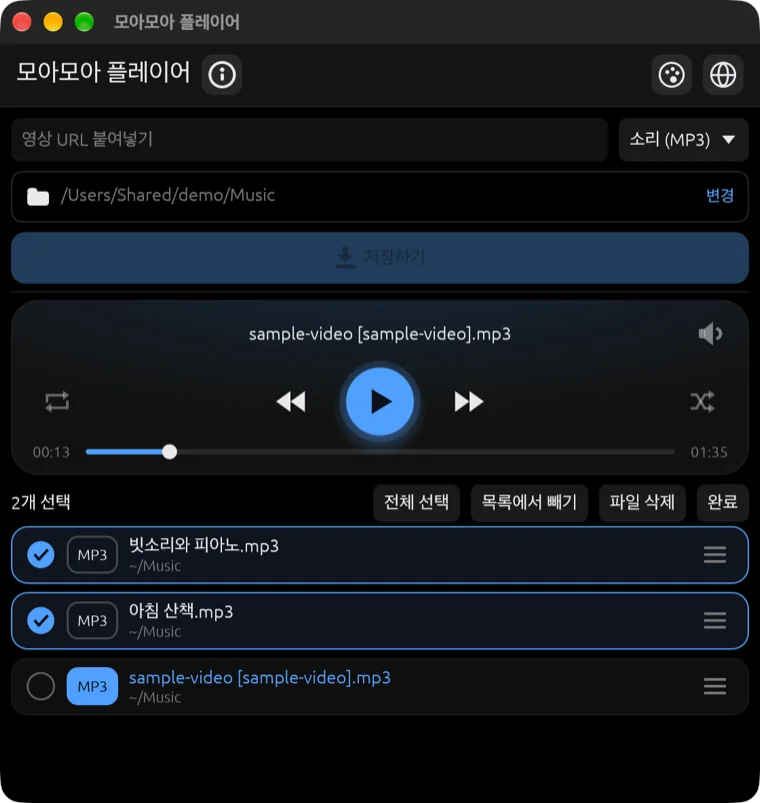
화면은 Mac에서 시험용 파일로 찍었어요. 링크 하나에 영상 하나씩 저장하며, 사이트의 사정에 따라 저장되지 않는 주소도 있어요.
음악 재생목록과 편의 기능
내 컴퓨터에 있는 음악·영상 파일과 폴더를 끌어다 놓아도 재생목록에 추가돼요. 원본은 옮기거나 복사하지 않아요.
-
다양한 파일 재생
MP3, WAV, FLAC, OGG, M4A, AAC는 물론 MIDI 파일도 재생해요. 반복(전체·한 곡)과 섞기, 재생 위치 이동이 되고, 스피커에 마우스를 올리면 음량 막대가 열려요.
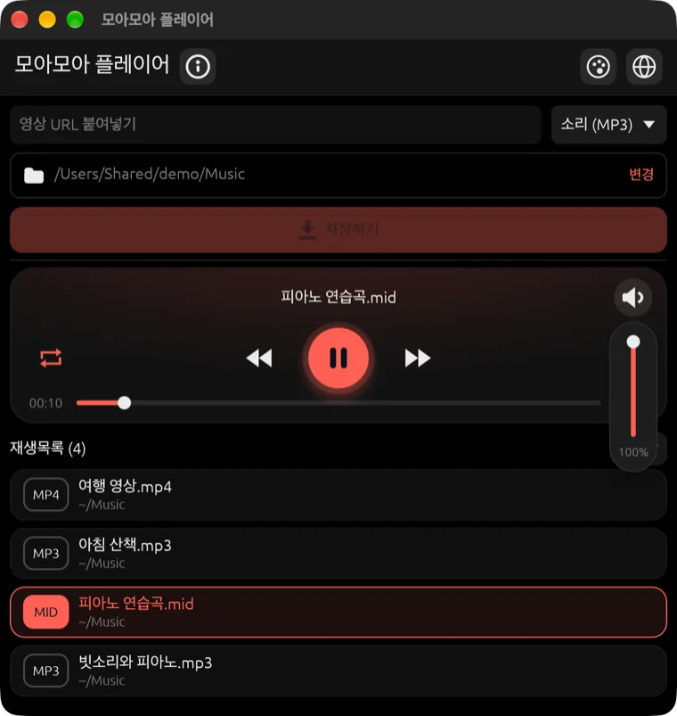
-
끌어서 순서 바꾸기
편집 모드에서 여러 파일을 선택해 함께 끌면 한 번에 자리를 옮겨요. 선택한 개수가 숫자로 보여요. 목록에서 빼거나 휴지통으로 옮길 수도 있어요.
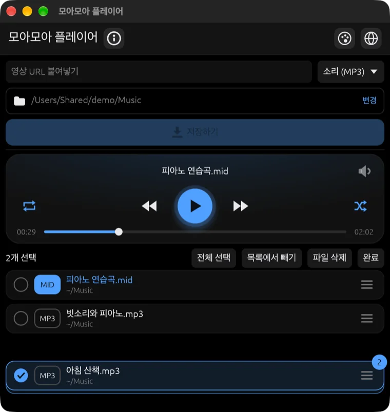
-
화면 색상 고르기
하늘, 산호, 연보라 가운데 고르거나 바탕색·글자색·강조색을 직접 정해요.
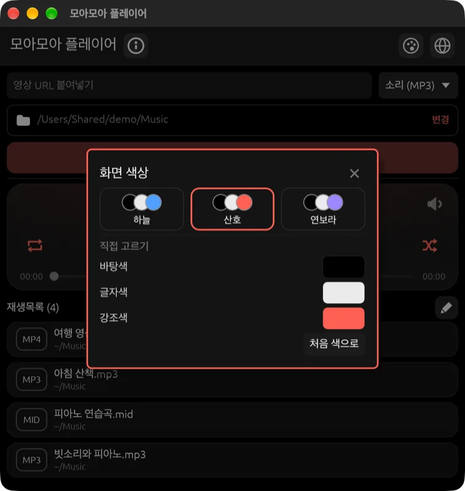
-
한국어와 영어
지구본 버튼을 누르면 한국어와 영어가 바로 바뀌어요.
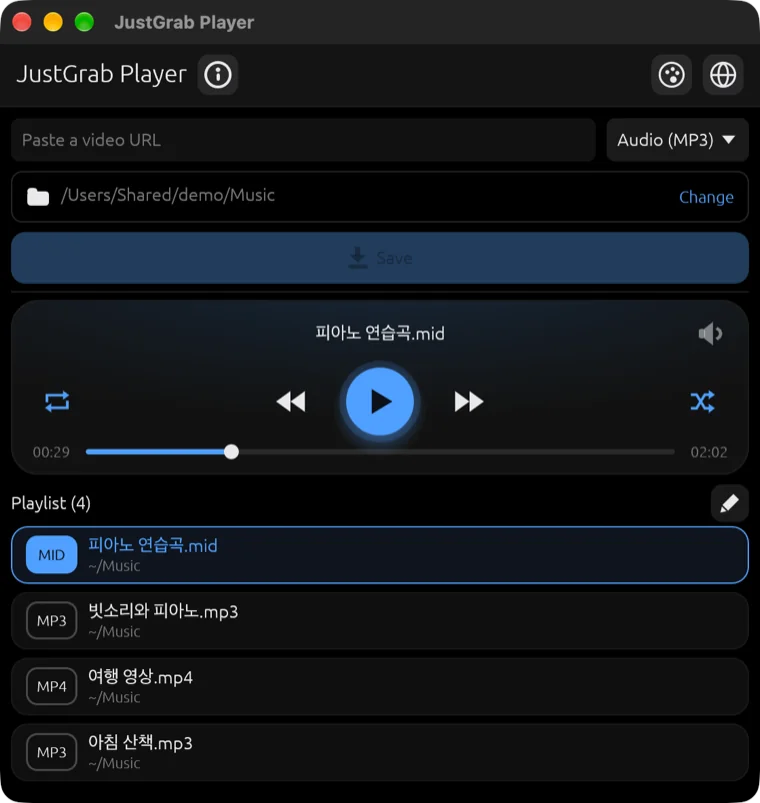
내 컴퓨터에서만 써요
- 무료이고 광고가 없으며 회원가입이 없어요.
- 개인정보를 수집하거나 개발자의 서버로 보내지 않아요.
- 재생목록과 설정은 내 컴퓨터에만 저장돼요.
- 다만 저장할 때에는 입력한 링크의 영상 사이트에 접속해요. 그래서 저장에는 인터넷 연결이 필요해요.
Windows·Mac·Linux 다운로드
내 컴퓨터에 맞는 파일을 받아 주세요. 파일은 GitHub에서 내려받으며, 이전 버전과 파일 확인값(SHA-256)은 릴리스 페이지 ↗에 있어요.
설치하거나 처음 실행할 때 경고가 나올 수 있어요. 무료로 배포하는 프로그램이라 코드 서명 인증서가 없어서, Windows, Mac, Ubuntu가 "확인되지 않은 앱"이나 "안전하지 않을 수 있음" 같은 경고를 보여줄 수 있어요. 이 페이지에서 받은 파일이 맞는지 확인한 뒤 아래 설치 방법을 따라 주세요.
Windows
Windows 64bit · 약 149MB
JustGrab-Player-Setup-1.0.75.exe
-
1내려받은 파일을 실행해요. "Windows의 PC 보호" 경고가 나오면 [추가 정보]를 눌러요.
Windows의 PC 보호 Microsoft Defender SmartScreen에서 인식할 수 없는 앱의 시작을 차단했습니다. 추가 정보 -
2[실행]을 누르고 화면을 따라 설치해요. 관리자 권한은 필요 없어요.
Windows의 PC 보호 앱: JustGrab-Player-Setup-1.0.75.exe 게시자: 알 수 없는 게시자
경고 화면은 예시 그림이에요. 실제 모양과 문구는 운영체제 버전에 따라 다를 수 있어요. 노란 테두리가 누를 곳이에요.
Mac
Apple Silicon(M1 이후) Mac · 약 178MB
JustGrab-Player-1.0.75-arm64.dmg
-
1DMG 파일을 열고 "모아모아 플레이어"를 Applications(응용 프로그램) 폴더로 끌어다 놓아 복사해요.
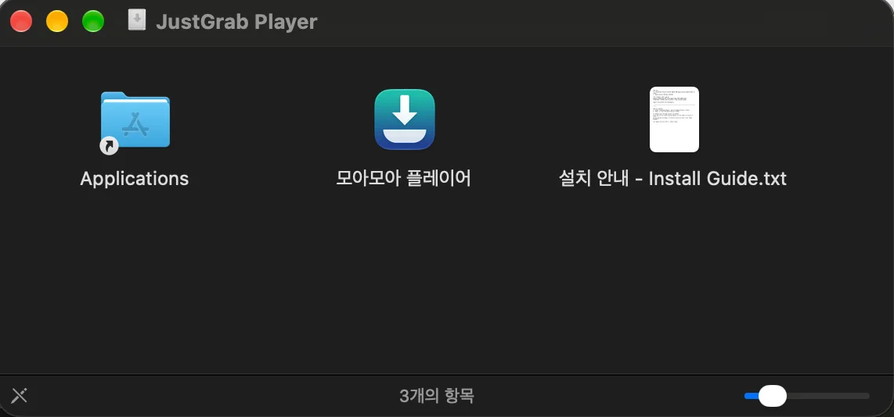
-
2별도의 설치 과정은 없어요. Applications 폴더에서 실행해요.
Linux
Ubuntu 22.04 이상, Intel·AMD 64bit · 약 222MB
JustGrab-Player-1.0.75-amd64.deb
-
1내려받은 파일을 열어요. 확인 창이 나오면 이 페이지에서 받은 파일인지 확인하고 [실행]을 눌러요.
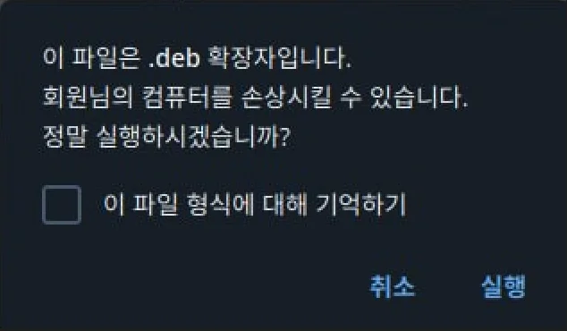
-
2앱 센터에서 [설치하기]를 눌러요. "안전하지 않을 수 있음" 안내가 보이고, 암호를 물으면 입력해요.
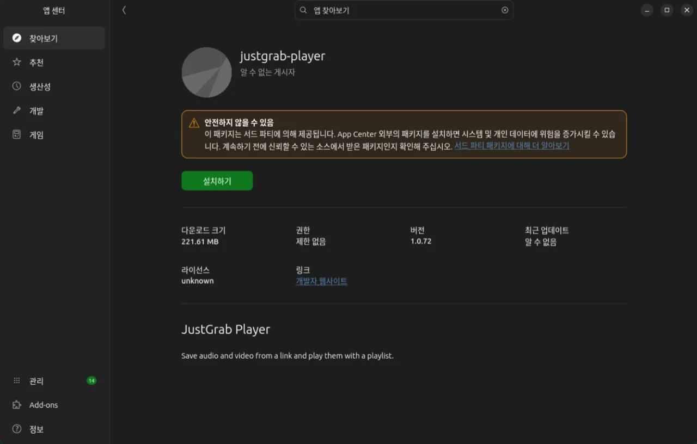
-
3설치가 끝나면 앱 목록에서 "모아모아 플레이어"를 실행해요.
※ 앱 센터로 설치되지 않을 때
파일을 받은 폴더에서 터미널을 열고 아래 명령을 써요. 명령은 그대로 복사해 쓰면 돼요(*는 버전 숫자를 대신해요). 폴더에 설치 파일이 여러 버전이면 새 파일 하나만 남겨 주세요.sudo apt install ./JustGrab-Player-*-amd64.deb
저작권 안내
저작권자의 허락 없이 콘텐츠를 복제·배포·전송하는 행위는 저작권법에 위반되어 법적 책임을 질 수 있습니다. 권리를 가졌거나 이용을 허락받은 콘텐츠, 또는 법에서 허용하는 범위에서만 내려받고 각 사이트의 이용약관을 지켜 주세요. 내려받은 콘텐츠의 이용에 대한 모든 책임은 사용자에게 있습니다.
함께 쓰는 오픈소스
설치 파일에는 아래 도구가 함께 들어 있고, 각 도구에는 해당 라이선스가 적용돼요. 전체 라이선스 문서는 앱의 [프로그램 정보] → [오픈소스 라이선스]에서 볼 수 있어요.
- yt-dlp (GPL-3.0-or-later)
- FFmpeg (GPL-3.0-or-later)
- Deno (MIT)
- GeneralUser GS (MIDI 음색 파일)